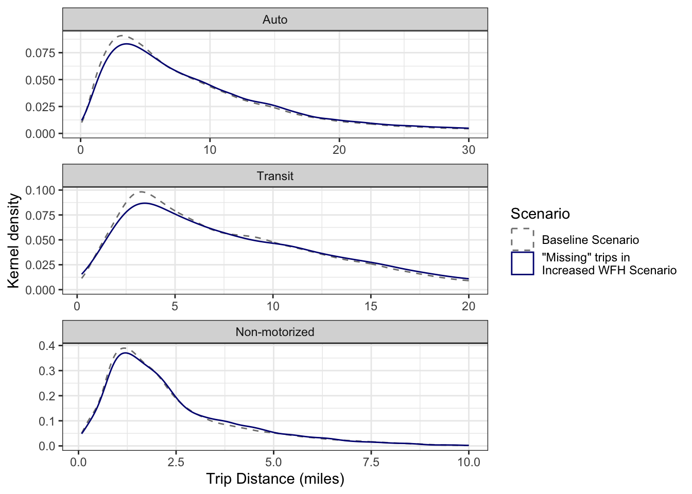

# A tibble: 9 × 8
purpose mode cube_wfh cube_by cube_diff_pct asim_wfh asim_by asim_diff_pct
<chr> <chr> <dbl> <dbl> <dbl> <int> <int> <dbl>
1 hbo auto 4097821. 4.10e6 0.000277 3078596 3042754 0.0118
2 hbo nonmotor 508869. 5.10e5 -0.00250 597323 591164 0.0104
3 hbo transit 37359. 3.73e4 0.000344 220937 218438 0.0114
4 hbw auto 1483120. 1.59e6 -0.0651 1209400 1288620 -0.0615
5 hbw nonmotor 71063. 7.65e4 -0.0712 180968 191880 -0.0569
6 hbw transit 44977. 4.88e4 -0.0774 178056 189610 -0.0609
7 nhb auto 2193201. 2.22e6 -0.0142 1606889 1645356 -0.0234
8 nhb nonmotor 144126. 1.46e5 -0.0156 216257 224248 -0.0356
9 nhb transit 13199. 1.35e4 -0.0189 100654 103398 -0.02656 Scenario 3: Increase in Remote Work
With the onset of the COVID 19 pandemic, there were unprecedented numbers of people working from home (Bick, Blandin, and Mertens 2021). This scenario is an attempt to model an increase in people working from home, or telecommuting. There has been much research, especially in recent years, on the implications of remote work. While many MPOs have adjusted their models to account for telecommuting, and most models follow similar principles, it is not obvious what the best method is. Bramberga (2023) even suggested that considerations for teleworking should be on a case by case basis because there is no single best approach. Before describing how we set up the telecommuting scenario for our research, we will first describe some general considerations we had based on what is in the literature.
6.1 Considerations for Modelling Remote Work
The first thing to consider is the fact that different job types allow different levels of telecommuting (Yasenov 2020). An office worker using a computer is much more capable to work from home than a construction worker. This fact is something that has been considered for telecommuting in most travel demand models (Bramberga 2023; Moeckel 2017; Sener and Bhat 2011).
Another consideration that may seem obvious is there will be less home-based work trips when more people are telecommuting. What isn’t as obvious is the idea that there may be more discretionary trips produced when people are able to telecommute. There have been many studies on this subject, and, when comparing the results of each study, it is hard to tell if that really is the case. Kim (2017) talks about a “rebound effect” where travel behavior changes on the days people don’t have to commute to work and they make more trips for different reasons. In another study, Zhu and Mason (2014) find that there are more miles traveled on the days people telecommute. This could be due to the existence of a travel time budget, where an increase in trips of one purpose will decrease the time people allocate for trips of another purpose (Moreno and Moeckel 2017).
Taking it a little further, Elldér (2020) finds that distinguishing between people that work from home all day and part of the day might make a difference. Compared to those who commute to work, the Sweden study shows that those who worked from home the whole day had less trips and miles traveled, but those who worked from home only part of the day had more trips and miles traveled. Using data from the 2007 Chicago Regional Household Travel Inventory, (he_telecommuting_2015?) found that, after adjusting for other factors like income, household size, and job industry, people who telecommute frequently make 0.072 more discretionary trips on average each day compared to those who don’t telecommute. (mokhtarian_the_1998?) saw opposite effects where vehicle miles traveled decreased for both work and discretionary trips on telecommuting days. Because there isn’t a solid conclusion on whether more discretionary trips are created as more people telecommute, we will not put that into the model.
The last consideration we will discuss is the distance people are willing to travel when they telecommute. Moeckel (2017) explains the correlation between the number of days people telecommute and the distance they are willing to live from their job. If someone works completely remote, then they will have nothing forcing them to live close to their job. If they only work one day a week in the office, then they are still willing to live farther away than someone who has to work in the office two or three days a week. This information could change the trip length frequency distribution of home-based work trips.
To organize the main ideas of the literature, we kept in mind these three principles as we prepared the models:
Different employment types have differing levels of telecommuting
Home-based work trips decrease
There is a greater possibility that home-based work trips are longer
The last principle mentioned has been used in other models (Moeckel 2017), but, due to the way the WFRC model is set up, we were unable to make a suitable change to reflect an increase in trip length frequency caused by telecommuting without changing the fundamental design of the model.
The following sections will describe how we used the first two principles as we prepared the telecommuting scenario in each of the models.
6.2 Scenario Creation
WFRC needs only to move 2050 data to 2019 for TC% and HBJ.
# A tibble: 10 × 3
name wfrc_2019 wfrc_2050
<chr> <dbl> <dbl>
1 Retail 0.027 0
2 Food 0.0187 NA
3 Manufacturing 0.0202 NA
4 Office 0.0666 NA
5 Gov't/Education 0.0167 NA
6 Health 0.0286 NA
7 Agriculture 0.0693 NA
8 Mining 0.0053 NA
9 Construction 0.0328 NA
10 Other 0.0537 NAThis model is already designed to represent work from home using a lookup table of telecommute percentages segmented by job type. This data is used to create telecommuting trips that don’t get assigned during trip distribution. Additionally, there is a global scaling factor to adjust all telecommute percentages. The BYU Team proposes using the WFRC/MAG predicted 2040 telecommute percentages in place of the base year values. Figure 3 shows a plot of the average telecommute percentage by year as forecasted in the WFRC/MAG model.
In the WFRC trip-based model, it was already programmed to reduce home-based work trips using a telecommute percentage for each type of employment and a percentage of home-base jobs. We simply changed the telecommute and home-based job percentages to align with projections for 2050. which increased telecommute trips from 3.7 to 10.2 percent and increased home-based jobs from 2.9 to 3.5 percent. If there was more guidance in the literature on how telecommuting affects other types of trips, then we could have tried to represent that in the model by adding a certain amount of discretionary trips according to the telecommute percentages. With the Wasatch Front Regional Council (WFRC) model, it might be difficult to have the additional discretionary trips be coming from the same zones as the telecommute trips. (I’m not sure about this. I’ll have to look more into it)
Asim is the same as calibration for the baseline scenario, but with different target %s (show table).
The WFRC model is already designed to represent work from home using a lookup table of telecommute percentages segmented by job type, as well as SE data indicating the number of fully-remote jobs by TAZ. The BYU Team used the WFRC predicted 2050 data for these in place of the base year values. The WFRC model does not include a potential increase in discretionary trips for those who work remotely, though some literature suggests this may happen in reality.
The team adjusted ActivitySim’s two remote work models to match the WFRC targets in both the base year and the increased WFH scenario. An additional note about the WFH implementation in ActivitySim is that because it is done before tour generation, an individual who does not need to make a work tour may be free to make other discretionary tours, and so this does at least somewhat model an increase in other trip types coinciding with increased telecommuting. Note that only the remote work parameters were adjusted in this scenario. The scenario still uses the “Base” 2019 population and SE data.
6.3 Scenario Analysis
Using the outputs from the trip-based model that show lengths and number of trips between zones, we calculated the vehicle miles traveled for each trip. This allowed us to see which zones had the biggest decrease in VMT. This also allowed us to find the number of trips of certain length to create a trip length frequency distribution that can be seen in (another figure).
# A tibble: 9 × 8
purpose mode wfh_trips by_trips trips_pct wfh_pmt by_pmt pmt_pct
<chr> <chr> <dbl> <dbl> <dbl> <dbl> <dbl> <dbl>
1 hbo auto 4097821. 4096688. 0.000277 19571300. 19509401. 0.00317
2 hbo nonmotor 508869. 510143. -0.00250 590349. 591297. -0.00160
3 hbo transit 37359. 37346. 0.000344 264432. 264203. 0.000867
4 hbw auto 1483120. 1586414. -0.0651 15015364. 15941522. -0.0581
5 hbw nonmotor 71063. 76506. -0.0712 122930. 132216. -0.0702
6 hbw transit 44977. 48752. -0.0774 500953. 547804. -0.0855
7 nhb auto 2193201. 2224878. -0.0142 12275574. 12427922. -0.0123
8 nhb nonmotor 144126. 146404. -0.0156 134784. 136914. -0.0156
9 nhb transit 13199. 13453. -0.0189 72018. 73563. -0.0210 # A tibble: 9 × 8
purpose mode wfh_trips by_trips trips_pct wfh_pmt by_pmt pmt_pct
<fct> <fct> <int> <int> <dbl> <dbl> <dbl> <dbl>
1 hbw auto 1209400 1288620 -0.0615 12012008. 12831073. -0.0638
2 hbw transit 178056 189610 -0.0609 1726785. 1840776. -0.0619
3 hbw nonmotor 180968 191880 -0.0569 429773. 456097. -0.0577
4 hbo auto 3078596 3042754 0.0118 17079259. 16886907. 0.0114
5 hbo transit 220937 218438 0.0114 1597334. 1589804. 0.00474
6 hbo nonmotor 597323 591164 0.0104 972346. 961824. 0.0109
7 nhb auto 1606889 1645356 -0.0234 7982697. 8218401. -0.0287
8 nhb transit 100654 103398 -0.0265 582557. 600727. -0.0302
9 nhb nonmotor 216257 224248 -0.0356 254643. 263963. -0.0353 It is straightforward to determine decreased VMT by production zone (and similar analyses) in both models (see Figure 11Figures 11 andFigure 12 12). Additionally, the team made a desire line plot in the WFRC model of decreased trips. This, however, is essentially a scaled-down version of the total trips in the Base scenario (see Figure 13). Remote work percentages do vary by industry, but there is no accounting for trips lengths or personal variables. Figure 14 shows these same plots for ActivitySim. At first glance, this also seems like a scaled-down version of the total trips, even though ActivitySim’s remote work models do include distance to work and personal attributes. It is difficult to tell from the figure alone. The team plans to do more analysis on this point.
Include a table of the asim tc and wfh coefficients. Maybe put it in the methodology.
